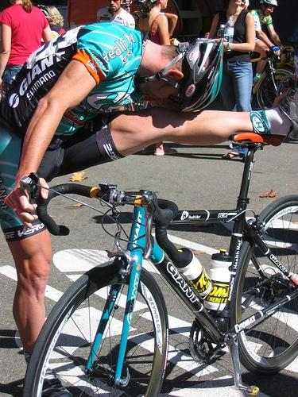
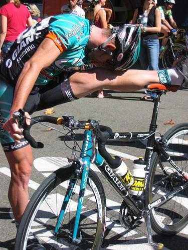
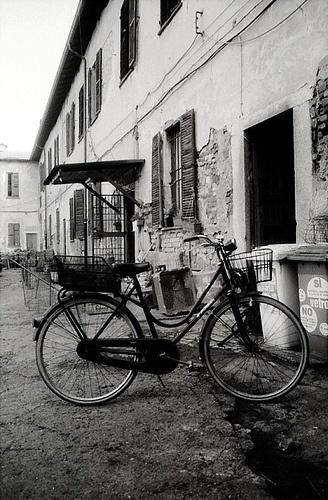
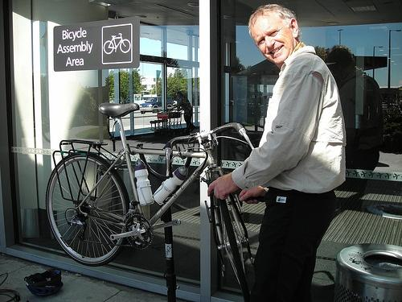
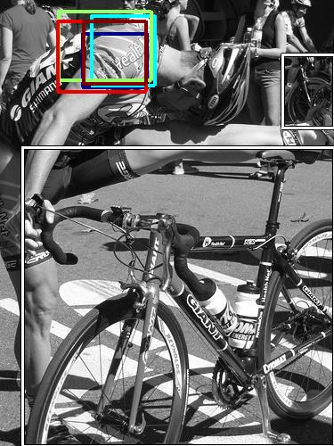
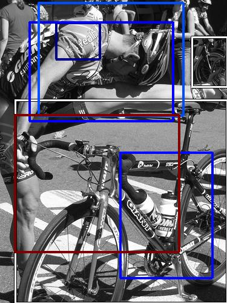
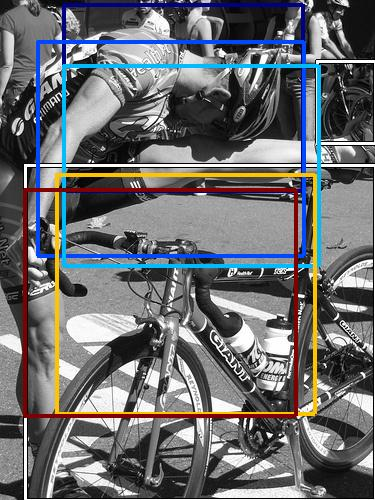
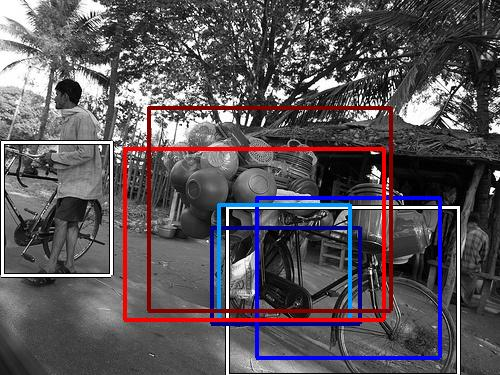

0.732206

0.787794

0.824857

0.901951

0.910275

0.926973

0.953971

0.964081
0.981314
0.988171
| Target image  | 0.732206 | 0.787794 | 0.824857 | 0.901951 | 0.910275 | 0.926973 | 0.953971 | 0.964081 |  0.981314 |  0.988171 |
| Target image  |  2491.836426 |  2294.147461 |  1919.416504 |  1820.191284 |  1128.136475 |  840.483887 |  656.805786 |  550.631348 |  421.089050 |  263.454590 |
Target image |  2089.376221 |  1958.358887 |  1916.548096 |  1723.390869 |  1683.843506 |  1648.167847 |  1603.390991 |  1583.172852 |  1574.108643 |  1517.343262 |
| Target image  |  2584.547363 |  2402.695801 |  2274.292236 |  1948.279419 |  1911.039062 |  1837.037598 |  1804.915649 |  1651.015747 |  1609.722412 |  1599.119629 |
| Target image  |  2577.297852 |  2166.973145 |  2147.404053 |  2040.891357 |  1899.707764 |  1880.753662 |  1868.180542 |  1821.510986 |  1816.662598 |  1666.400024 |